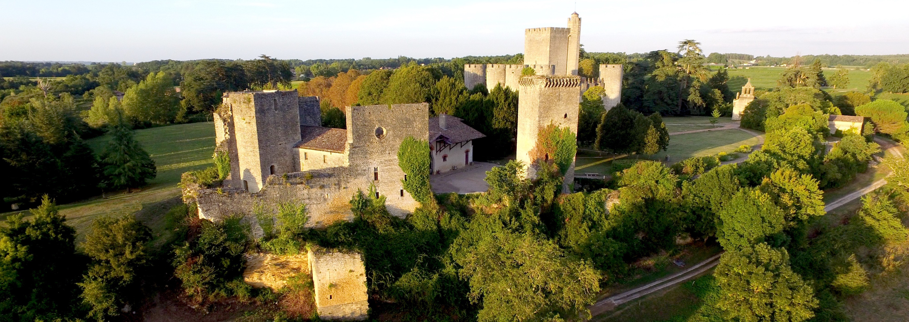
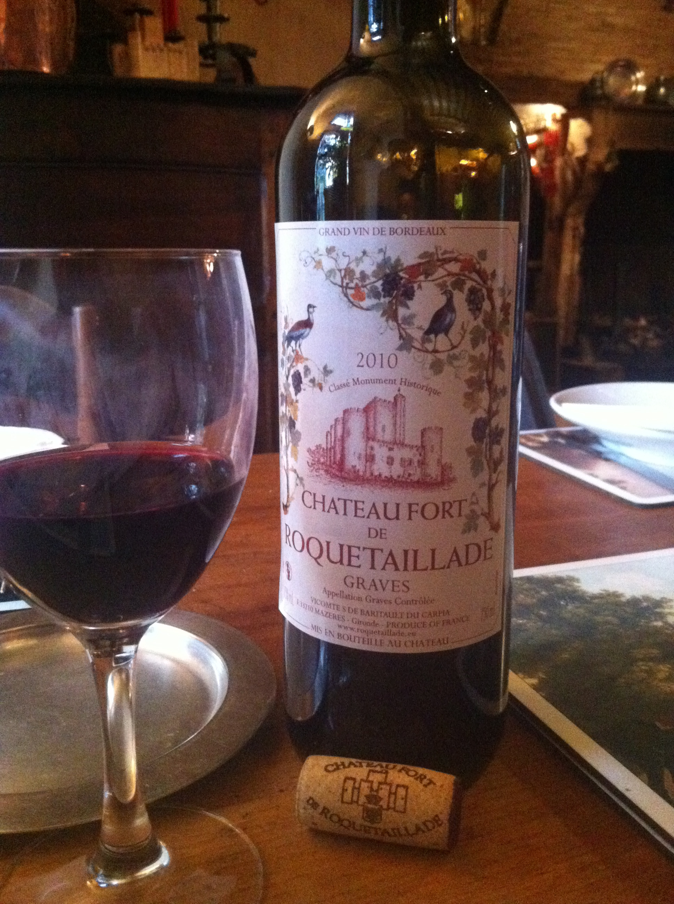
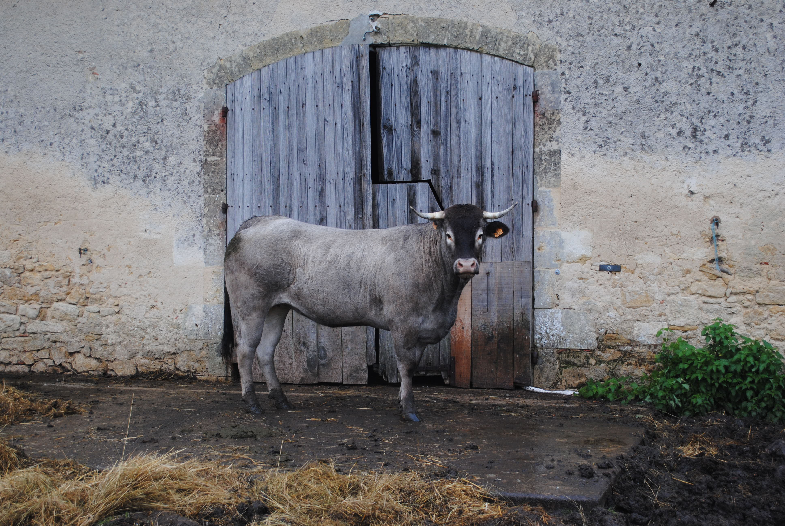
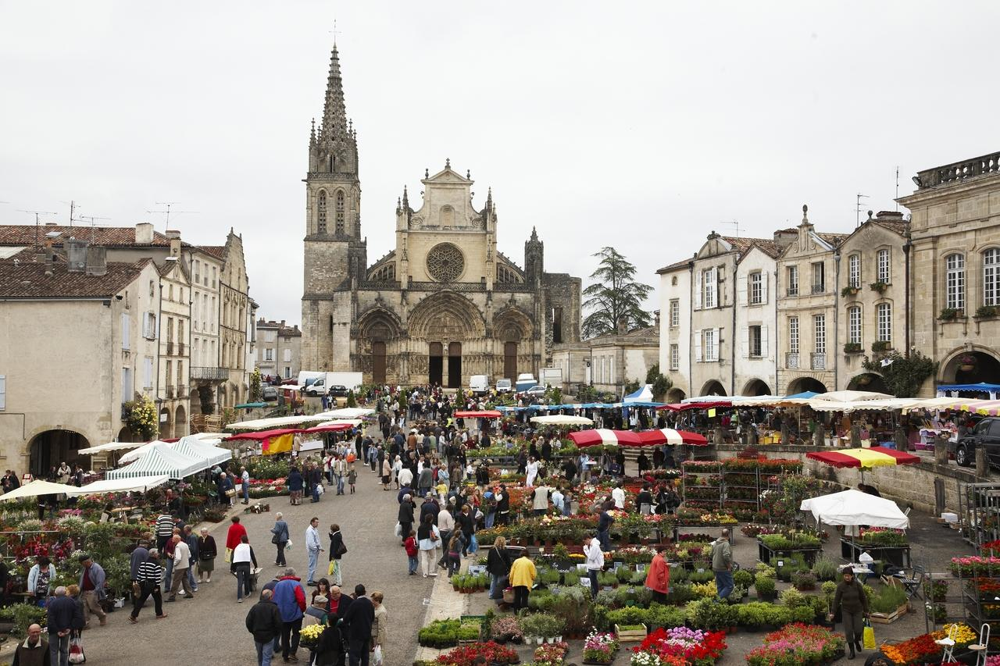
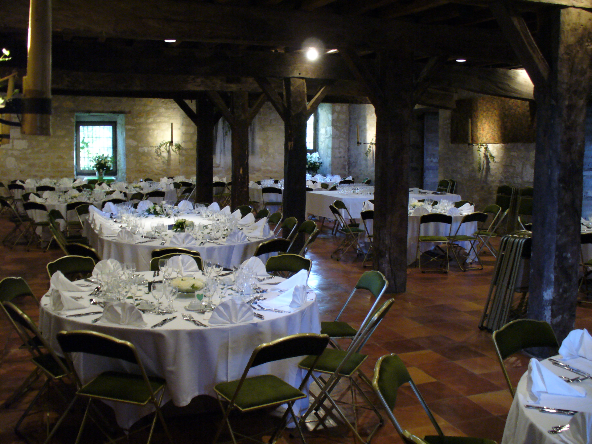
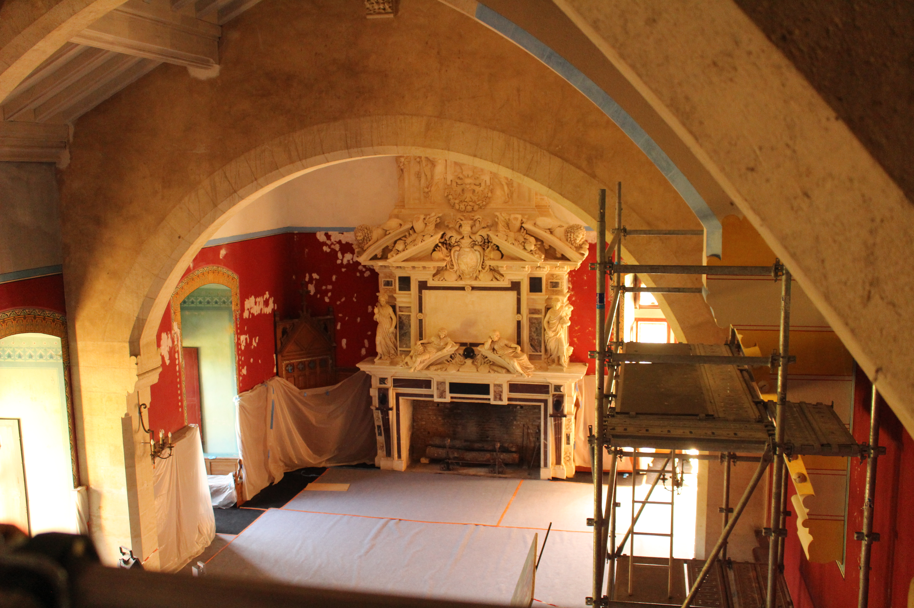
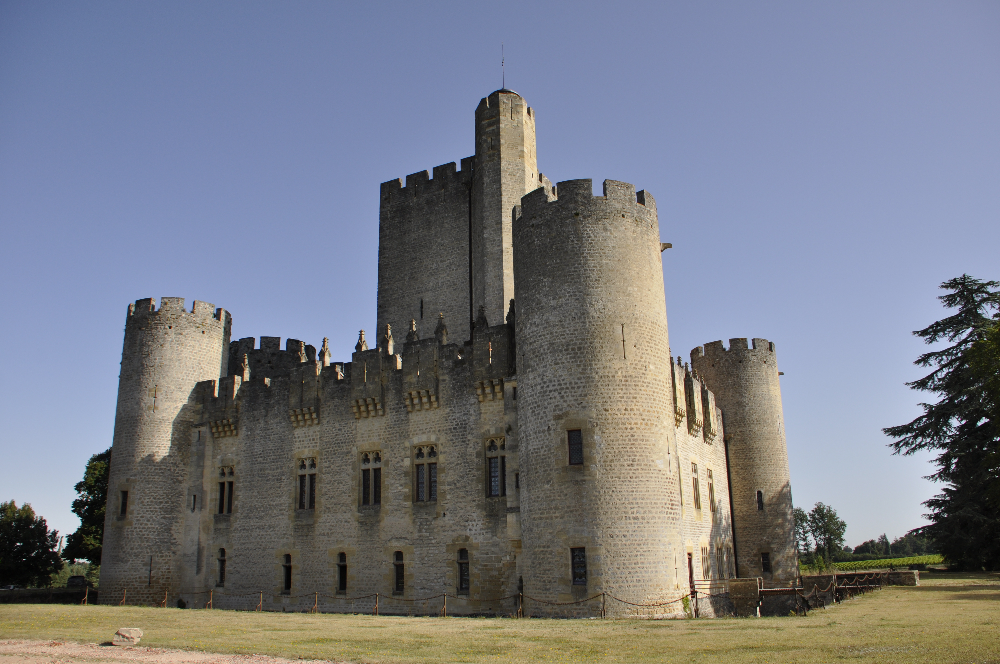

Le Château Neuf
Forteresse médiévale élevée au début du XIVᵉ siècle.

Le Château Vieux
Vestiges de la première forteresse du XIIᵉ siècle.

Salons de Viollet-le-Duc
Décors néogothiques polychromes et mobilier d'époque.

La Chapelle
Visite incluse dans le parcours guidé du château.

Chambre seigneuriale
Appartements meublés et restaurés au XIXᵉ siècle.

La grande cuisine
Découverte comprise dans le tarif de visite guidée.

Détails sculptés
L'œuvre architecturale et décorative de Viollet-le-Duc.

La Métairie
Musée vivant reconstituant la vie d'une famille de métayers.

Animaux de ferme gasconne
Cochons gascons et vaches bazadaises sur le domaine.

Parc Natura 2000
Parc boisé ouvert de 14h30 à 17h00.

Salles de réception
Espaces de 100 m² et 200 m² attenantes pour événements.

L'Ostrea Guinguette
Située à la Métairie de Roquetaillade (renseignement : 06.38.46.71.57).